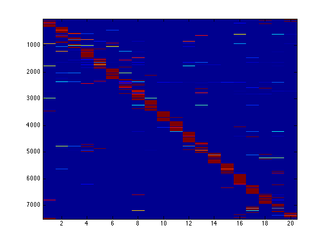

Contents
newspred.m
From A First Course in Machine Learning, Chapter 5. Simon Rogers, 01/11/11 [simon.rogers@glasgow.ac.uk] Naive Bayesian classifier on the 20 newsgroup data
clear all; close all;
Load the data
load ../data/newsgroups
Compute the class conditional q parameters
alpha = 2; % Smoothing parameter M = size(X,2); % Vocabulary size q = zeros(20,M); for c = 1:20 pos = find(t==c); q(c,:) = (alpha - 1 + sum(X(pos,:),1))./(M*(alpha-1) + sum(sum(X(pos,:)))); end
Compute the test probabilities
Do this with logs for numerical stability. Note: this takes quite a long time!
Nt = size(Xt,1); testP = zeros(Nt,20); for c = 1:20 fprintf('\nClass %g',c); testP(:,c) = sum(Xt.*log(repmat(q(c,:),Nt,1)),2); end
Class 1 Class 2 Class 3 Class 4 Class 5 Class 6 Class 7 Class 8 Class 9 Class 10 Class 11 Class 12 Class 13 Class 14 Class 15 Class 16 Class 17 Class 18 Class 19 Class 20
Normalise
C = 20;
prior = repmat(1/C,1,C); % Prior class probabilities
testP = testP + repmat(log(prior),Nt,1);
testP = exp(testP - repmat(max(testP,[],2),1,20));
testP = testP./repmat(sum(testP,2),1,20);
Visualise the probabilities
imagesc(testP);
Make the confusion matrix
Assign to max probability
assignments = (testP == repmat(max(testP,[],2),1,C)); [r,c] = find(assignments); [r I] = sort(r); c = c(I); confusion = zeros(C); for predicted = 1:C for true = 1:C confusion(predicted,true) = sum(testt==true & c==predicted); end end imagesc(confusion) xlabel('True class'); ylabel('Predicted class');